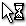
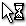

| Constant | Cursor |
|---|---|
| cr_none | |
| cr_default |  |
| cr_arrow | |
| cr_cross |  |
| cr_beam |  |
| cr_size_nesw |  |
| cr_size_ns |  |
| cr_size_nwse |  |
| cr_size_we |  |
| cr_uparrow |  |
| cr_hourglass |  |
| cr_drag |  |
| cr_appstart |  |
| cr_handpoint |  |
| cr_size_all |
window_set_cursor(cursor);
| Argument | Description |
|---|---|
| cursor | The cursor to set for the game window. |
Returns:N/A
With this function you can set the cursor for the game window to any one of the constants listed below (to find the current cursor being used you can use the function
window_get_cursor which will also return one of these constants):
| Constant | Cursor |
|---|---|
| cr_none | |
| cr_default | |
| cr_arrow | |
| cr_cross | |
| cr_beam | |
| cr_size_nesw | |
| cr_size_ns | |
| cr_size_nwse | |
| cr_size_we | |
| cr_uparrow | |
| cr_hourglass | |
| cr_drag | |
| cr_appstart |  |
| cr_handpoint | |
| cr_size_all |
if mouse_check_button_pressed(mb_left)
{
window_set_cursor(cr_drag);
}
The above code will change the window cursor to the standard windows drag cursor if the left mouse button has been pressed.